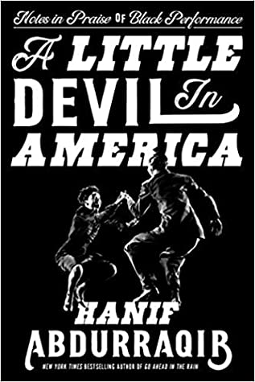
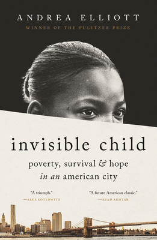
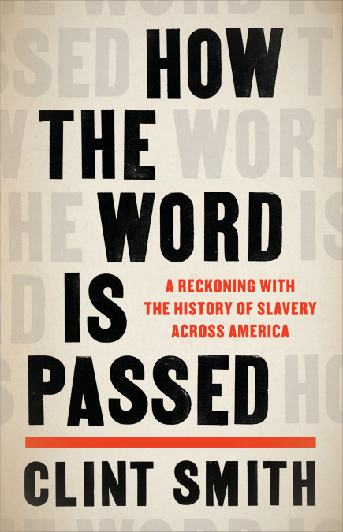
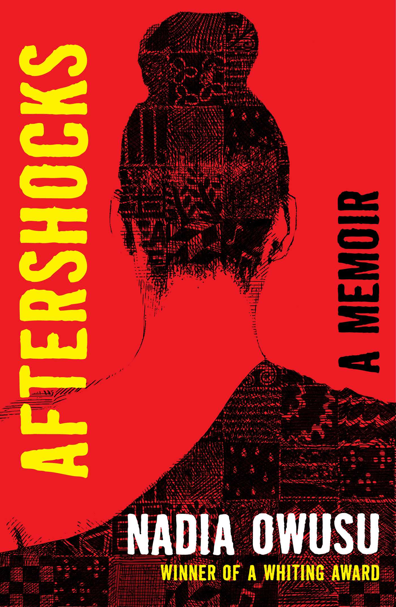
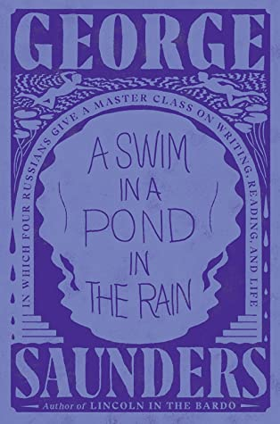
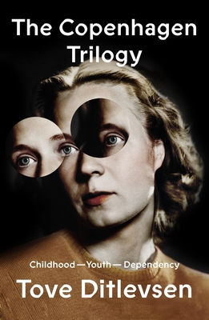
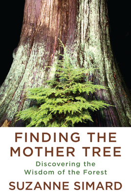
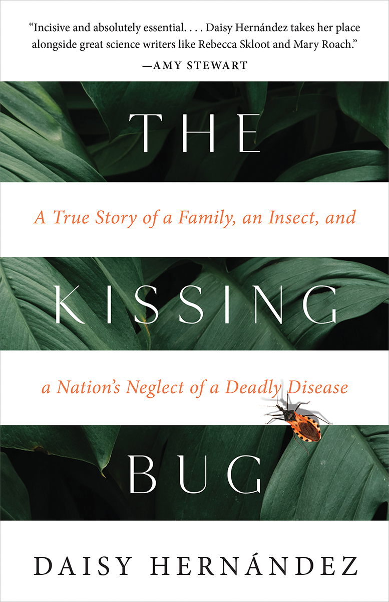
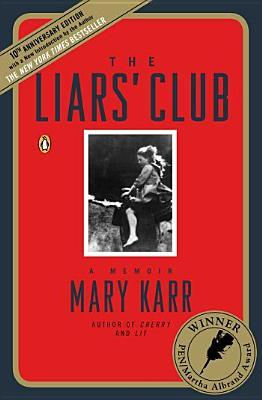

A Little Devil in America

A stirring meditation on Black performance in America from the New York Times bestselling author of Go Ahead in the Rain
ReadDownload
Crying in H Mart

An unflinching, powerful memoir about growing up Korean American, losing her mother, and forging her own identity.
ReadDownload
Invisible Child

The riveting, unforgettable story of a girl whose indomitable spirit is tested by homelessness, poverty, and racism in an unequal America—from Pulitzer Prize-winning journalist Andrea Elliott of The New York Times.
ReadDownload
How the Word Is Passed

It is the story of the Monticello Plantation in Virginia, the estate where Thomas Jefferson wrote letters espousing the urgent need for liberty while enslaving over 400 people on the premises.
ReadDownload
Aftershocks

This poetic, genre-bending work—blending memoir with cultural history—from Whiting Award winner Nadia Owusu grapples with the fault lines of identity, the meaning of home, black womanhood, and the ripple effects, both personal and generational, of emotional trauma.
ReadDownload
Empire of Pain

Empire of Pain is a masterpiece of narrative reporting and writing, exhaustively documented and ferociously compelling.
ReadDownload
A Swim in a Pond in the Rain

A Swim in a Pond in the Rain is a deep exploration not just of how great writing works but of how the mind itself works while reading, and of how the reading and writing of stories make genuine connection possible.
ReadDownload
The Copenhagen Trilogy

Childhood tells the story of a misfit child's single-minded determination to become a poet; Youth describes her early experiences of sex, work, and independence. Dependency picks up the story as the narrator embarks on the first of her four marriages and goes on to describe her horrible descent into drug addiction, enabled by her sinister, gaslighting doctor-husband.
ReadDownload
Finding the Mother Tree

From the world's leading forest ecologist who forever changed how people view trees and their connections to one another and to other living things in the forest--a moving, deeply personal journey of discovery.
ReadMore
The Kissing Bug

The Kissing Bug tells the story of how poverty, racism, and public policies have conspired to keep this disease hidden—and how the disease intersects with Hernández’s own identity as a niece, sister, and daughter; a queer woman; a writer and researcher; and a citizen of a country that is only beginning to address the harms caused by Chagas, and the dangers it poses.
ReadDownload
The Liars' Club: A Memoir

A darkly funny, unblinking account of her life growing up in a small Texas oil town with a family that basically defines dysfunction, this is a book you'll want to read to tatters.
ReadDownload
How to Be an Antiracist

No matter where we are on our quest to unlearn the unconscious bias that's so deeply woven into the fabric of our society, this powerful book will serve as an excellent resource. It's part primer, part personal story, part call to action and all necessary.
ReadMore